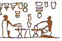
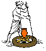
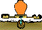

| The
Origins of the Potter's Wheel
by Victor Bryant
The Egyptian Potter (male) - shown in Tomb Paintings
The earliest records of the potter's trade and in particular the
development of the wheel can be seen in the records and pictures
made by the Egyptians from about 2500 BC. down to Roman times. Below
are scenes which illustrate the essentials of the potters craft
in ancient Egypt. These line drawings are based on wall paintings
in Egyptian tombs. Click on the thumbnail image for a larger version.
Preparing clay - kneading the clay with the feet.
 An
assistant holding a finished bowl whilst the potter may be decorating
or smoothing a similar small bowl on top of a clay hump. He is pulling
the turntable with the other hand. It is probably not a fast wheel. An
assistant holding a finished bowl whilst the potter may be decorating
or smoothing a similar small bowl on top of a clay hump. He is pulling
the turntable with the other hand. It is probably not a fast wheel.
Two
potters using turntables; one seems to be removing small bowl with
a string, whilst the other is smoothing the rim of a vase.
A simple reference to lighting the kiln.
Taking
pots from the kiln. One man is handing pots to another. Notice the
implication of the hot atmosphere: they are wearing little or no
clothes.
Carrying
the fired pots away in pairs of wicker baskets, using a wooden yoke
across the shoulders to spread the heavy weight.
Turntables and Wheels in Egypt
The
invention of a simple wooden turntable probably occurred before
3000 BC. Ancient Egyptian tomb paintings, during the next 2000 years
or more, depict potters at work using a number of different versions
of turntables made from wood and stone.
These drawings show in more detail the structure of turntables which
were devised. Both types of turntable appear in early Egyptian wall-paintings.
By this time pottery vessels could now be coiled and smoothed very
evenly; and made quite quickly.
The
little limestone statuette of an ancient Egyptian potter was made
about 2000 BC. It helps us to see how the potter's wheel evolved
from a simple turntable pulled round with the hand. The technique
was at first just a faster method of coiling. Village potters still
use this method in some parts of the world.
The earliest turntables were probably not very free-turning,
but gradually potters learned how to make the shaft/pivot/bearings
with less friction, and much heavier turntables. Both improvements
increased the speed, momentum and power of the wheel. Eventually
it would become possible for a faster and heavier turntable/potter's
wheel to be used for "throwing" a pot.
With a Wheel - New Shapes And Decoration
The appearance of stemmed clay goblets and pottery decoration
with smooth spirals and true circles are evidence of the use of
the potters wheel.
 The
Goblet: this shape consists of two separate forms - a bowl and a
stem. It is quite possible to coil a dish or bowl with a stem in
clay without using a wheel, but the whole form will have a somewhat
irregular quality. The
Goblet: this shape consists of two separate forms - a bowl and a
stem. It is quite possible to coil a dish or bowl with a stem in
clay without using a wheel, but the whole form will have a somewhat
irregular quality.
In
fact potters only began making bowls with stems when the wheel arrived.
- A variety of smooth regular curved shapes can be made quickly
and easily using a potters wheel. When leather hard the pieces can
be joined together with slip.
Evidence of the Faster Wheel
A much later example from Cyprus in the 7th century BC. This terracotta
flask was thrown in three parts, joined together and then brush
painted with slip on a wheel - circular lines, bands and spirals.
The Fast Coiling Method Flourished
Strangely, the technique of making a pot changed only gradually
over the centuries, even though the pottery wheel improved quite
rapidly. Most pots were still made by coiling but the faster wheel
enabled much larger coils to be blended together faster and gradually
squashed and smoothed into a thin even wall using fingers and ribs.
This "Fast Coiling" method is still common in many village potteries
of the Mediterranean, the Middle East and Asia even today. The "throwing"
technique never fully developed in many cultures. Potters used the
wheel for faster smoother coiling, often using soft but enormously
thick coils. Enormous storage jars were made by coiling and we can
still find village potters today working this way in Western Asia
and the Eastern Mediterranean.
Coiling on the Wheel Today
In
this photo a 20th century Afghan village potter is building up coils
onto a wheel ready to press and smooth them together to raise the
wall of this pot.
Here
a 20th century Turkish potter adds a coil to a pot he is making
on a wheel. He turns the heavy flywheel slowly with his foot whilst
gradually lowering the thick coil of clay off his shoulder onto
the stiff wall of the partly built pot.
Most village potters in Crete continue to made pots essentially
by coiling on a wheel. Here are two photographs of Cretan potters.
First
photo: The coil of clay looks like a long french bread roll.
In the second photo the potter has thinned and smoothed out the
last coil adding to the height of the pot wall. He uses a flat piece
of bone for smoothing. After allowing the soft wall to dry a little
and stiffen up, the next coil would be added and the process repeated.
These
stacks of fired storage jars were made by the two Cretan potters
shown fast coiling similar pots. The pots were fired in a simple
open updraft kiln using vine clippings as fuel.
High or Low?
From the Eastern Mediterranean world into Europe the potters wheel
developed into a bench high turntable with a large heavy flywheel
at foot level, as illustrated in a book on pottery making techniques
from 16th century Italy.
Low Friction bearings and a Heavy Flywheel
19th
century French potters using sturdy fast wheels, but very similar
in design to the previous 16th century ones.
Until the continuous power-driven wheel arrived, the throwing technique
was possible only with a low friction, fast, heavy momentum wheel.
Where such smoother running heavy wheels were devised the technique
of 'throwing' did gradually develop. "Throwing" seems a puzzling
use of the modern English word, but it derives from the Old English
or Saxon term "to twist".
The Cyclical Throwing Technique
Throwing with this type of wheel is cyclical. The potter kicks
the heavy flywheel until it is revolving quite fast then works on
the lump of fairly soft clay. As the speed of the wheel drops, it
become more difficult to work on the clay. So the potter stops throwing
and kicks the flywheel up to speed again. This cyclical process
is repeated until the work is finished. The lump of clay used is
relatively soft, and slurry, rather than water, is used for lubrication.
A large apron of some sort is needed for protection as usually there
is no tray! A large sheet of soft leather was used as well in later
workshops. Compare the last two illustrations.
The Basic Momentum Wheel
 The
main difference between the 16ht and the 19th century wheels is
in the materials used to make them. Like the 16th century Italian
wheel, the model on the left is mostly made of wood with a strip
of greased leather used as an upper bearing and a metal point and
a stone or glass socket at the base. The
main difference between the 16ht and the 19th century wheels is
in the materials used to make them. Like the 16th century Italian
wheel, the model on the left is mostly made of wood with a strip
of greased leather used as an upper bearing and a metal point and
a stone or glass socket at the base.
The Modern Momentum Wheel
Like
the 19th century French example, later versions from more recent
times would use a thick iron or steel rod and greased metal bearings.
The most recent models models run very smoothly and have very little
friction and are almost silent. Until the industrial revolution
in 18-19th century Europe the potter's wheel hardly changed. Many
individual potters today still prefer this silent cyclical momentum
kick wheel to the modern variable speed electric wheel.
Differences East and West
From
the Indian continent to the Far Eastern World a distinctive variation
of the potter's wheel developed. The heavy flywheel itself was often
the throwing table. Sometimes as shown here balanced on a fine point
with the weight carefully distributed. Instead of kicking the wheel
it was speeded up using a rod or stick.
In China and Japan it is was usual for the potter to sit at or near
ground level, not on a raised seat as in the West. Sometimes, controlling
the speed of the wheel was the job of an assistant.
Inexplicably
the Eastern potter has traditionally turned his wheel clockwise
whilst Western potter usually turns his anti clockwise! Image: Shoji
Hamada at work.
Trying out the technique
For anyone today who has only used an electric wheel, throwing
on a traditional momentum wheel is a new and unnerving experience.
It is however easy to understand and can become addictive.
The process is cyclical:
- The wheel or flywheel is turned or kicked until moving fast
enough to throw or centre.
- A fairly soft clay ball is then centred and opened out. Gradually
friction will cause the wheel to slow down. At some point you
stop throwing. Only you can decide when the speed becomes too
slow.
- The wheel has then to be kicked or turned until it is up to
a fast speed once again.
- This cyclical process (kicking then throwing) is repeated until
the pot is finished.
- Slurry rather than water lubricates the pot.
Summary: The Origin and Development
of the Potters Wheel
- The Potters Wheel, as we understand it today,
was not suddenly invented. The first steps were probably using
a shallow dish, bowl or even a large shell for building a coiled
pot. This technique probably dates back to perhaps 4000 BC.
- The invention of a simple wooden turntable probably
occurred before 3000 BC. Ancient Egyptian tomb paintings depict
potters using turntables made from wood and stone.
- The earliest turntables were probably not very
free-turning and could only be used for easier coiling.
- When the pottery turntable/wheel was being developed
in Southern Iraq during the 4th millennia BC. production increased
rapidly. Pottery making became a full-time occupation. Men became
the potters.
- Small turntables became larger. A smoother running
shaft with a heavier throwing head or large flywheel and bearings
with less friction progressively improved the speed and power
of the wheel.
- A potter's assistant could turn the wheel around
or a low flywheel could be slowly kicked by the potter.
- Strangely, the technique of making a pot changed
only gradually. The "Fast Coiling" method using a wheel is still
common in many village potteries of the Mediterranean, the Middle
East and Asia even today.
- "Throwing" derives from the Old Saxon term "to
twist".
- Until the 18th century the throwing technique
was only possible with a low friction, fast, heavy wheel, called
a momentum potters wheel until the 18th century when mechanical
power wheels began to be developed.
- The throwing technique using a momentum wheel
in cyclical (kick then throw; repeat). By contrast a mechanical/electrical
power wheel can usually run at a continuous steady speed or varying
speeds controlled by a foot pedal.
Victor Bryant ©1994, 2001
Email
Victor if you want to find out more about Ceramic Web
Tutorials or make a comment.
More Articles
|


{kind=link}
{kind=link}
{kind=link}
{kind=link}
{kind=link}
{kind=link}
{kind=link}
{kind=link}
{kind=link}
{kind=link}
{kind=link}
{kind=link}
{kind=link}
{kind=link}
{kind=link}
{kind=link}
{kind=link}
{kind=link}
{kind=link}
{kind=link}
{kind=link}
{kind=link}
{kind=link}
{kind=link}